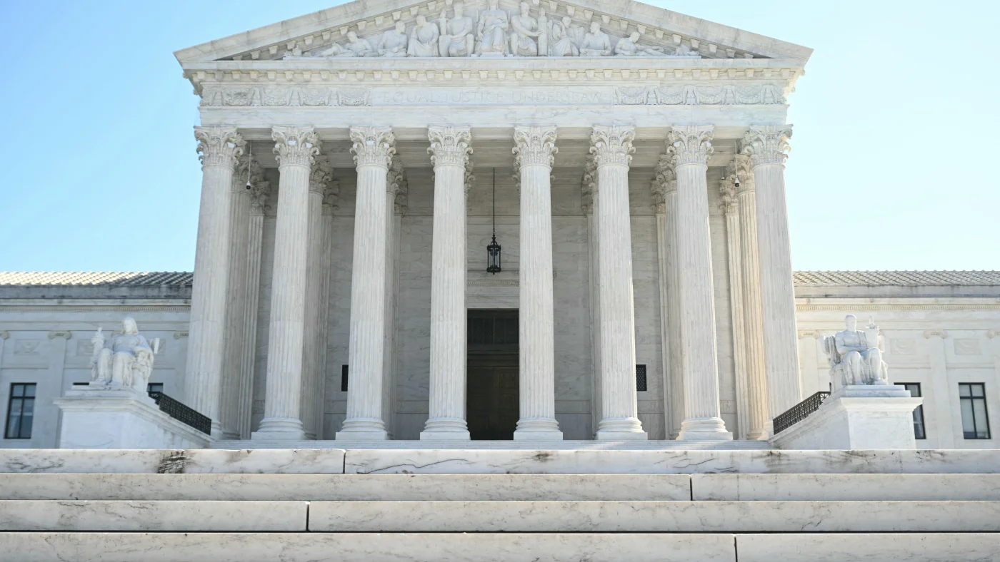

01

公众信息会议：景观噪音条例
Public Information Session: Landscaping Noise Bylaw
了解在特别市镇会议之前提议的燃气动力吹叶机条例。
Learn more about the proposed gas-powered leaf blower bylaw before Special Town Meeting.
原始报道 / Original source ↗DAILY NEWS · 每日新闻简报
Independent AI-assisted summaries of linked reports. Headlines, dates and source URLs are supplied by NewsAPI; summaries are not independent verification of full articles. Please read original reports for details.
Public Information Session: Landscaping Noise Bylaw
了解在特别市镇会议之前提议的燃气动力吹叶机条例。
Learn more about the proposed gas-powered leaf blower bylaw before Special Town Meeting.
原始报道 / Original source ↗
Stocks surge, and the Dow soars 1,500 points as oil prices tumble following the US midterm elections
道琼斯工业平均指数上涨超过1500点，纳斯达克综合指数上涨1.4%。
The Dow Jones Industrial Average surged more than 1,500 points, and the Nasdaq composite rose 1.4%.
原始报道 / Original source ↗
2026 live election results: Mass. Ballot Question 7, the ‘starter homes’ measure
在选举之夜，关注投票计数的进展。
Follow along below as votes are counted on election night.
原始报道 / Original source ↗
Massachusetts REALTORS Charitable Foundation Awards $27,000 in Grants to 18 Local Nonprofits
波士顿的女性午餐处是获得资助的组织之一，支持解决马萨诸塞州的住房、饥饿和无家可归问题。
Boston’s Women’s Lunch Place among the recipients of funding supporting organizations addressing housing, hunger and homelessness across Massachusetts.
原始报道 / Original source ↗
JD Vance tries to distance himself from Iran war after GOP’s deep losses in midterm elections
Vance表示将在选举后决定是否竞选2028年总统，并在社交媒体上发布长文，指责不受欢迎的伊朗冲突导致共和党的惨败。
Vance, who has said he would decide after the election whether to run for president in 2028, issued a lengthy social media post blaming the unpopular conflict with Iran for the GOP's drubbing.
原始报道 / Original source ↗布伦特原油与WTI美国原油最新市场行情。
Brent and WTI crude oil market quotations.
价格及更新时间以行情提供方为准。

Crude oil prices fall below $90 a barrel as Vance blames GOP election defeat on Iran war
在副总统JD Vance将共和党中期选举的惨败归咎于伊朗战争后，原油价格大幅下跌。
Crude oil prices tumbled Wednesday after Vice President JD Vance blamed the Republicans' steep midterm election losses on the Iran war.
原始报道 / Original source ↗Back in the majority, Democrats have plans for a long list of Trump investigations
民主党将有能力传唤记录并强迫个人作证，可能会对爱泼斯坦档案、埃隆·马斯克、伊朗战争和特朗普的商业利益进行审查。
Democrats will have the ability to subpoena records and compel individuals to testify.
原始报道 / Original source ↗Nvidia's Huang is asked to brief Congress on reported Chinese spy relationship
据《纽约时报》报道，特朗普总统大约一年前已被简报有关这些情报发现。
President Donald Trump was briefed about a year ago about those intelligence findings.
原始报道 / Original source ↗Euro zone inflation hits 4% for first time in three years as interest rate hike looms
这主要是由于能源通胀在十月份飙升超过20%。
It was driven by energy inflation, which surged above 20% in October.
原始报道 / Original source ↗
Death toll hits 29 after Russian strike on Ukrainian aid site, with 48 still missing
泽连斯基总统表示，俄罗斯发射了289架攻击无人机、17枚弹道导弹和59枚巡航导弹，袭击与美国选举同时发生。
Russia launched 289 attack drones, 17 ballistic missiles and 59 cruise missiles across nine regions, President Zelenskyy said.
原始报道 / Original source ↗
Supreme Court leans toward LGBTQ exclusion for publicly funded Catholic preschools
最高法院周二听取了关于科罗拉多州普及学前教育计划的辩论，以及宗教学校是否可以在州反歧视法下排除某些家庭。
The Supreme Court heard arguments Tuesday about Colorado's universal pre-K program and whether religious schools can bar certain families despite the state's anti-discrimination law.
原始报道 / Original source ↗Midterm elections are coming to a close as voters pass judgment on Trump's second term
中期选举即将结束，这将作为对特朗普第二任期的公投。
Midterm elections that will serve as a referendum on President Donald Trump’s second term are coming to a close.
原始报道 / Original source ↗